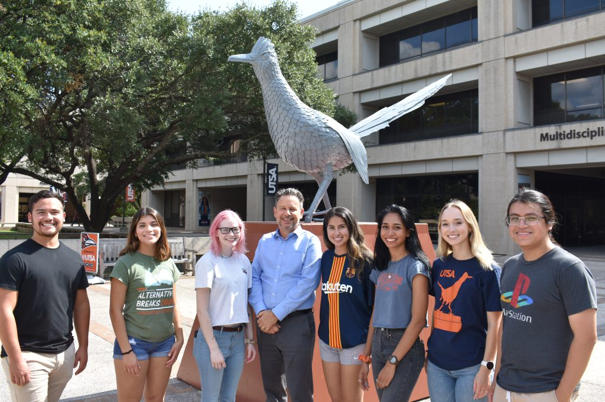

Journey
Curriculum Vitae [ concise | verbose ]
The University of Texas at San Antonio
Dean, College of Sciences
Distinguished Professor, Physics and Astronomy
Curriculum Vitae [ concise | verbose ]
The University of Texas at San Antonio
Dean, College of Sciences
Distinguished Professor, Physics and Astronomy